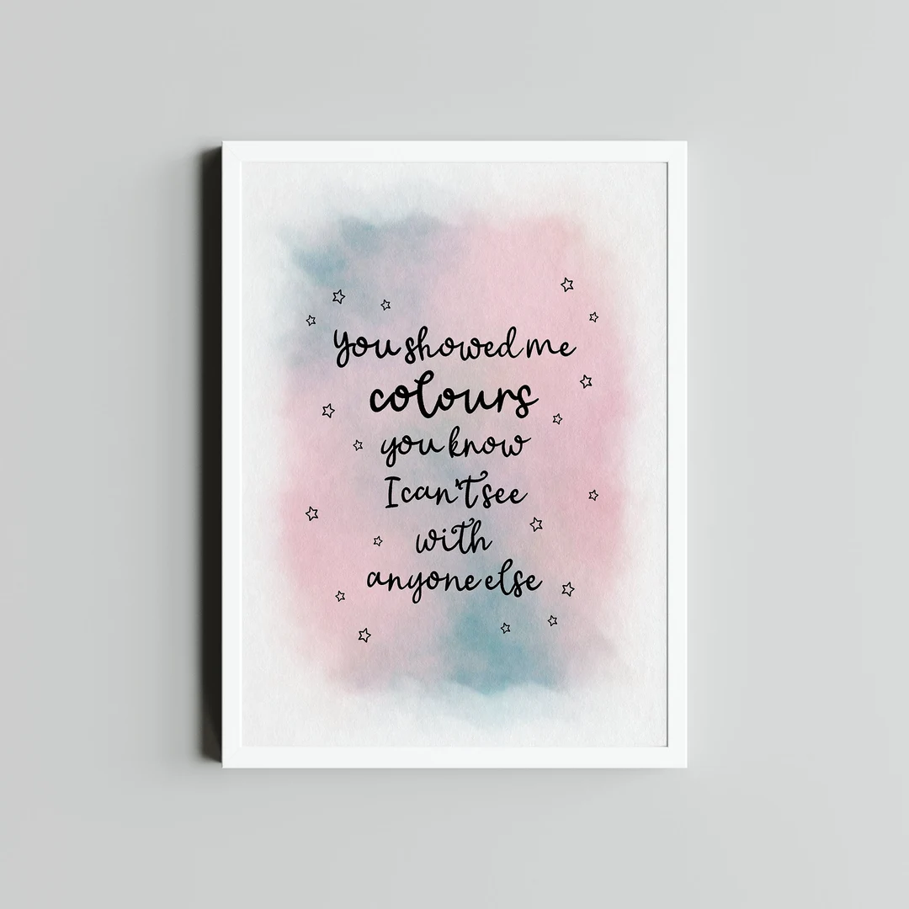

2,September 2023
90 minitues read
| Childhood Pic | Middle School Age | High School | Now |
Well,nowadays Most Of The People Say "She's the MUSIC INSTURY"
Why Most Of The People Say That? Well she's now one of the most famous siger in the world. Besides of Singing she's also A Songwriter, Director, Actor, Modle, Multi-instrumentalist, Singer-songwriter, Record Producer, Guitarist, Lyricist, Businessperson, Philanthropist, Pianist, Film actor, Film Score Composer, Music Video Director. She has also got a doctor degree
Taylor Alison Swift (born December 13, 1989) is an American singer-songwriter. Her discography spans multiple genres, and her narrative songwriting—often inspired by her personal life—has received critical praise and widespread media coverage. Born in West Reading, Pennsylvania, Swift moved to Nashville, Tennessee, at the age of 14 to pursue a career in country music. She signed a songwriting contract with Sony/ATV Music Publishing in 2004 and a recording deal with Big Machine Records in 2005 and released her eponymous debut studio album in 2006. She has been passionate about singing since she was young and she tried her best everyday without sleeping at night and even have a album caled "Midnights" which presents the fact that she never sleeps Debut album and Fearless Taylor Swift Taylor Swift The song was an immediate success, spending eight months on the Billboard country singles chart. Now age 16, Swift followed with a self-titled debut album, and she went on tour, opening for Rascal Flatts. Taylor Swift was certified platinum in 2007, having sold more than one million copies in the United States, and Swift continued a rigorous touring schedule, opening for artists such as George Strait, Kenny Chesney, Tim McGraw, and Faith Hill. That November Swift received the Horizon Award for best new artist from the Country Music Association (CMA), capping the year in which she emerged as country music’s most-visible young star. On Swift’s second album, Fearless (2008), she demonstrated a refined pop sensibility, managing to court the mainstream pop audience without losing sight of her country roots. With sales of more than half a million copies in its first week, Fearless opened at number one on the Billboard 200 chart. It ultimately spent more time atop that chart than any other album released that decade. Singles such as “You Belong with Me” and “Love Story” were popular in the digital market as well, the latter accounting for more than four million paid downloads.
Kanye West incident at the VMAs, Red, and 1989 Taylor Swift T In 2009 Swift embarked on her first tour as a headliner, playing to sold-out venues across North America. That year also saw Swift dominate the industry award circuit. Fearless was recognized as album of the year by the Academy of Country Music in April, and she topped the best female video category for “You Belong with Me” at the MTV Video Music Awards (VMAs) in September. During her VMA acceptance speech, Swift was interrupted by rapper Kanye West, who protested that the award should have gone to Beyoncé for what he called “one of the best videos of all time.” Later in the program, when Beyoncé was accepting the award for video of the year, she invited Swift onstage to conclude her speech, a move that drew a standing ovation for both performers. At the CMA Awards that November, Swift won all four categories in which she was nominated. Her recognition as CMA entertainer of the year made her the youngest-ever winner of that award, as well as the first female solo artist to win since 1999. She began 2010 with an impressive showing at the Grammy Awards, where she collected four honours, including best country song, best country album, and the top prize of album of the year. Later that year Swift made her feature-film debut in the romantic comedy Valentine’s Day and was named the new spokesperson for CoverGirl cosmetics. Although Swift avoided discussing her personal life in interviews, she was surprisingly frank in her music. Her third album, Speak Now (2010), was littered with allusions to romantic relationships with John Mayer, Joe Jonas of the Jonas Brothers, and Twilight series actor Taylor Lautner. Swift reclaimed the CMA entertainer of the year award in 2011, and the following year she won Grammys for best country solo performance and best country song for “Mean,” a single from Speak Now.
Just like that she made Red ,Reputation , Lover , Folklore , Evermore , Midnights ,Organized
Well this website refires to Taylor And Her Career. So, This website doesn't meanto harm someone's Reputatiton.
|  |
the picture 1 is one of the lyrics from the album
folklore - illicit affairs
Well the picture 2 is one of the lyrics from
evermore- Champagne Problems
the picture 3 is one of the lyrics from the album
folklore - August
So songs like this shows her writing skills and how she can be the music indrustry{kind=link}
{kind=link}
{kind=link}
{kind=link}